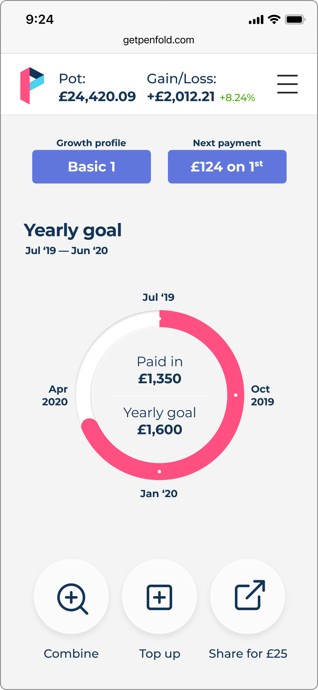
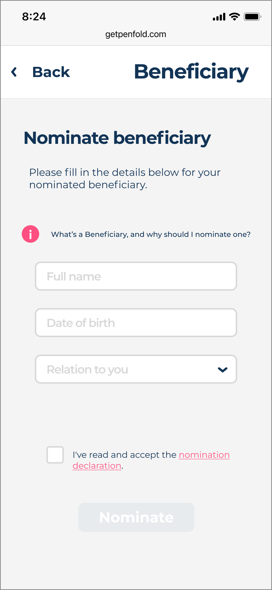

As first hire, I took a pension proof-of-concept to a shippable MVP — and built the modular system that let the team move faster than a startup its size should.
That's how a co-founder put the goal in our first meeting. Pensions are the dullest, highest-friction, lowest-trust product there is — I figured it'd be impossible, so I was very excited to try.
The live MVP had already won funding and a dozen users. But it was one long linear flow, and the onboarding drop-off was brutal. The pieces were right; the sequence was wrong.
Rather than redesign screen by screen, I rebuilt around a modular system: onboarding as independent modules a user could complete at will, and — once I noticed how similar the views were — a single component set feeding both web and mobile.
Infrastructure the whole team could move on. It's what turned a three-person startup into something that shipped like a much bigger one.
Using only the pieces that already existed, I reorganised the single linear flow into a coherent sequence of independent modules — steps a user could complete in any order, and that the product team could iterate on separately. Same components, dramatically better path.
Placeholder screens — onboarding modules export from Figma sections 07 & 08 in the build pass.
The #1 pain point was the lack of a mobile app. Building it, I realised the web components were nearly identical to what mobile needed — so I made the mobile view the source that fed desktop. One system, two environments, a fraction of the effort, and a product that felt coherent everywhere.

The mobile dashboard — pension pot, growth, and the core actions (Combine · Top up · Share), all built from the shared component set. Click to enlarge.
On a Friday call, a beta user asked — half-joking — what happened if he died. None of my flows had ever considered it. It turned out the company already handled it manually: an email to a third party with four data points.
So I sketched a four-field screen and a one-line spec. Because every component already existed, engineering built, tested and shipped it that afternoon — in time for me to call the user back: "thanks to your suggestion, everyone can now nominate a beneficiary."

Speed only matters if you're building the right things. I started each day in FullStory watching real sessions, ran a weekly chat with Customer Support on the top tickets, and invited a beta user into that chat every week. And I tracked every complaint against the person who raised it — so when we fixed it, they got a personal note: "that thing that bugged you — we fixed it. Thanks for flagging." It humanised the brand and drove word of mouth.
The foundations held. Penfold is an award-winning app, frequently rated the UK's most user-friendly pension — the modular system I built kept paying off long after I left. The best design infrastructure outlives the person who made it.
Open, César: any hard number from your time (signups, activation, drop-off reduction)? And can we name the specific awards + confirm "Best Pension 2026"? A named award + one metric would make the durability story undeniable.
The lesson I carried out of Penfold: the point of a design system isn't consistency — it's speed. Build the infrastructure right and a user's off-hand comment on Friday becomes a shipped feature by the afternoon. That's the compounding return good design leaders build for.
Two real screens exported at 3×; the rest are placeholders to fill in the build pass. Click a real one to enlarge.